AMU. Bed 14.
“Please come now, doctor — he's had a fit.”
He fitted on the ward
You arrive on the Acute Medical Unit at 15:45, still pulling on gloves. Staff Nurse Priya Nair meets you at the bay.
- 1A–E first. He is unresponsive — the primary survey comes before anything else. Tap a letter on him to open it: look, listen, feel, treat what you find, then call it.
- 2When the A–E is done you get the first results, and you write the initial management plan — the next hour. Every move costs ward time.
- 3Then the history — from Priya, from his wife on the phone, and from him if he wakes up — investigations on ICE, the diagnosis, and the complete plan. Then prove you can manage it.
The primary survey. Tap a letter on him — A, B, C, D, E. Assess, treat what you find, then make the call.

Nothing is listed — type the examination you want, the way you'd say it on the ward.
Tap to ask. Priya is at the bedside; his wife Jean is on the ward phone; Dennis will answer if he can. Each question costs about 30 seconds.

Bedside tests are on the trolley. Everything else — bloods, imaging, the charts and notes — is ordered on ICE: type it the way you would at the terminal. Build a round, send it; the clock jumps by the slowest test you have to wait for. Lab send-offs go now and land when they land.
Why did he fit?
Your bleep goes.
You called it wrong.
Now manage it
He is awake and asking for tea. This is what separates safe from dangerous — the decisions, with the evidence behind each.
- A–E is not a ritual; it is where the reversible causes live. Airway first and held (a post-ictal snore is partial obstruction: position, suction, an NPA if there is a gag — never a Guedel if there is). Oxygen to a target. At C, a gas from the cannula already in his arm and a look at what is running through it. At D, a glucose. Treat as you find, call each letter, and go back to A whenever anything changes.
- Any seizure on a ward gets a glucose and a gas before anyone decides why. A drinker who fits on day three is withdrawal until you look — and withdrawal seizures cluster 6–48 hours after the last drink. At 80 hours, with a CIWA of 4 on a benzodiazepine regimen, look for something else. The gas had the answer in ten minutes.
- Severe symptoms mean hypertonic saline, now. A seizure, a GCS of 8 or less, persistent vomiting, cardiorespiratory distress. ESE 2014: 150 mL of 3% over 20 minutes, sodium at 20 minutes, repeat up to twice until +5 mmol/L. Society for Endocrinology: 100 mL over 10 minutes, up to three times. Then stop. Don't wait for the work-up — but if the urine can go in a pot first without delaying anything, send it: results after 3% are harder to read.
- The ceiling: 10 in the first 24 hours — and 8 if he is high-risk. Alcohol, malnutrition, hypokalaemia, liver disease, a sodium of 105 or less. Dennis had three. Osmotic demyelination arrives days later — dysarthria, dysphagia, quadriparesis — and it is prevented, not treated.
- The danger is overnight. When the ADH drive goes — the pneumonia settles, the nausea stops, the drip comes down — the kidney dumps water and the sodium climbs by itself. Measure it 4–6-hourly, watch the urine output, write the ceiling in the notes, and know the rescue: 5% glucose ~10 mL/kg and desmopressin 2 micrograms IV.
- Classify before you label. Serum osmolality low (true hypotonicity). Urine osmolality over 100 (ADH is on — not potomania or polydipsia). Urine sodium over 30 (not salt-hungry — not hypovolaemic, unless diuretics or the adrenals). Clinically euvolaemic. Then exclude hypothyroidism and adrenal insufficiency, and diuretics. Only then is it SIADH.
- 0.9% saline can make SIADH worse. With a urine osmolality of 486, a litre of saline is excreted in about 630 mL of urine and the rest is kept as water. If the urine is more concentrated than the fluid, the fluid lowers the sodium.
- Fluids are drugs, and weekend results are somebody's job. Two days of 5% glucose into a man with pneumonia took him from 129 to 112, and the 06:00 result of 118 sat on a whiteboard for seven hours. He gained a kilogram while eating nothing. NICE CG174: prescribe IV fluid with the electrolytes in front of you, and review it every day.
- A provoked seizure is not epilepsy. No antiepileptic. A benzodiazepine for a seizure that is happening (over five minutes, or recurring), not one that has stopped. Tell him about driving; refer to first-fit clinic only if there is doubt.